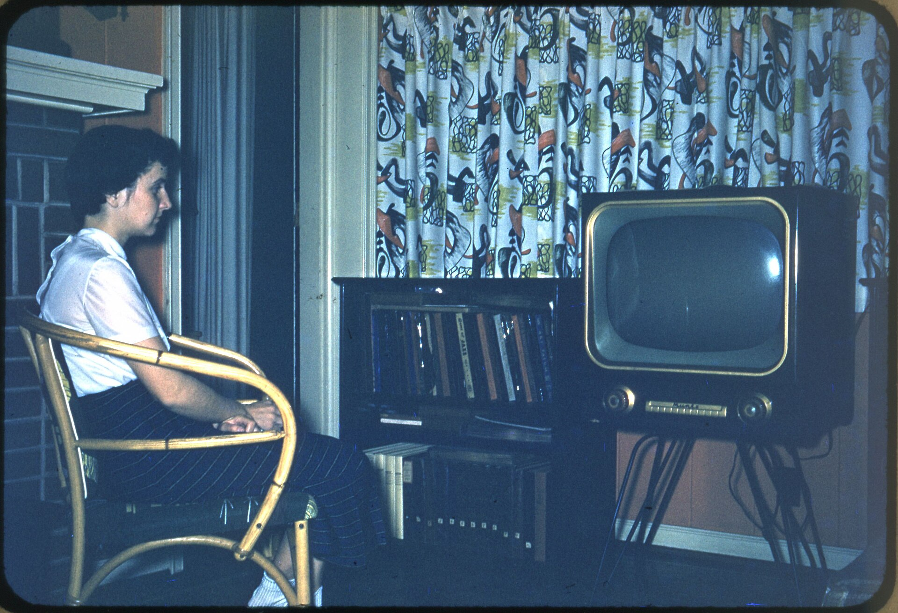

YouTube just put your spending on the scoreboard
Nine separate parasocial stories came out of one event. The throughline is worse than any of them.
Parasocial MagazineRead →
YouTube's creator posts and remote comments are built for the TV. Your sofa is a forum now.

The single weirdest thing about this is how small the change is and how complete. A person used to sit on a couch and watch something. Now they sit on a couch and are in a room where the person can see them. Nothing was added except a comment box, and everything changed, because the comment box is the whole architecture of a parasocial relationship and we finally put it on the big screen where it belongs.
Notice, name, choose. That's the whole method.
The clerk's shelf - how this got here first
Sources
Parasocial Magazine · 26 SEP 2026
Where this sits in the encyclopedia
More from BRAND
Nine separate parasocial stories came out of one event. The throughline is worse than any of them.
TechTarget, on the four components of a customer obsession model. Read it twice and then read this site instead.
The platform that built the parasocial relationship is now selling a room inside it.
Twitch reopens a ban, Netflix finds 1 in 6 YouTube users subscribes, and everyone admitted it in the same week.